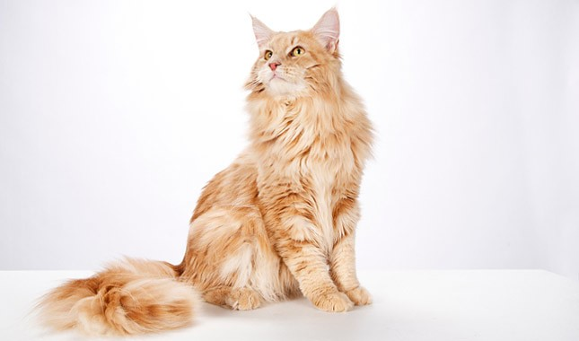

Cat Breeds
This page showcases a variety of different cat breeds.
Persian Cat

The Persian cat is a long-haired breed of cat characterized by its round face and short muzzle. It is also known as the "Persian Longhair" in the English-speaking countries. The first documented ancestors of the Persian were imported into Italy from Iran (historically known as Persia in the west) around 1620. Recognized by the cat fancy since the late 19th century, it was developed first by the English, and then mainly by American breeders after the Second World War. Some cat fancier organizations' breed standards subsume the Himalayan and Exotic Shorthair as variants of this breed, while others treat them as separate breeds.
Bengal

The Bengal cat is a domesticated cat breed created from hybrids of domestic cats, especially the spotted Egyptian Mau, with the Asian leopard cat (Prionailurus bengalensis).
The breed name comes from the leopard cat's taxonomic name. Bengals have a wild appearance; their golden shimmer comes from their leopard cat ancestry, and their coats may show spots, rosettes, arrowhead markings, or marbling.
They are an energetic breed which needs much exercise and play.
Maine Coon

The Maine Coon is the largest domesticated cat breed. It has a distinctive physical appearance and valuable hunting skills. It is one of the oldest natural breeds in North America, specifically native to the US state of Maine, where it is the official state cat.
The Maine Coon is a large and sociable cat, hence its nickname, "the gentle giant". It is characterized by a prominent ruff along its chest, robust bone structure, rectangular body shape, an uneven two-layered coat with longer guard hairs over a silky satin undercoat, and a long, bushy tail.
The breed's colors vary widely, with only lilac and chocolate disallowed for pedigree. Reputed for its intelligence and playful, gentle personality, the Maine Coon is often cited as having "dog-like" characteristics.